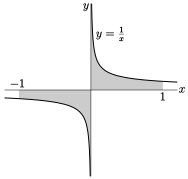

Subsection 1.12.2 Examples
With the more formal definitions out of the way, we are now ready for some (important) examples.
Solution:
- Fix any \(p \gt 0\text{.}\)
- The domain of the integral \(\int_1^\infty\frac{\dee{x}}{x^p}\) extends to \(+\infty\) and the integrand \(\frac{1}{x^p}\) is continuous and bounded on the whole domain.
- So we write this integral as the limit\begin{align*} \int_1^\infty\frac{\dee{x}}{x^p} &=\lim_{R\rightarrow\infty} \int_1^R\frac{\dee{x}}{x^p} \end{align*}
- The antiderivative of \(1/x^p\) changes when \(p=1\text{,}\) so we will split the problem into three cases, \(p \gt 1\text{,}\) \(p=1\) and \(p \lt 1\text{.}\)
- When \(p \gt 1\text{,}\)\begin{align*} \int_1^R \frac{\dee{x}}{x^p} &= \frac{1}{1-p} x^{1-p} \bigg|_1^R\\ &= \frac{R^{1-p}-1}{1-p} \end{align*}Taking the limit as \(R \to \infty\) gives\begin{align*} \int_1^\infty\frac{\dee{x}}{x^p} &= \lim_{R \to \infty} \int_1^R\frac{\dee{x}}{x^p}\\ &= \lim_{R \to \infty} \frac{R^{1-p}-1}{1-p}\\ &= \frac{-1}{1-p} = \frac{1}{p-1} \end{align*}since \(1-p \lt 0\text{.}\)
- Similarly when \(p \lt 1\) we have\begin{align*} \int_1^\infty\frac{\dee{x}}{x^p} &= \lim_{R \to \infty} \int_1^R \frac{\dee{x}}{x^p} &= \lim_{R \to \infty} \frac{R^{1-p}-1}{1-p}\\ &= +\infty \end{align*}because \(1-p \gt 0\) and the term \(R^{1-p}\) diverges to \(+\infty\text{.}\)
- Finally when \(p=1\)\begin{align*} \int_1^R\frac{\dee{x}}{x} &= \log|R|-\log 1 = \log R \end{align*}Then taking the limit as \(R \to \infty\) gives us\begin{align*} \int_1^\infty\frac{\dee{x}}{x^p} &= \lim_{R \to \infty} \log|R| = +\infty. \end{align*}
- So summarising, we have\begin{align*} \int_1^\infty\frac{\dee{x}}{x^p} &=\begin{cases} \text{divergent} & \text {if } p\le 1 \\ \frac{1}{p-1} & \text{if } p \gt 1 \end{cases} \end{align*}
Example 1.12.9 \(\int_0^1\frac{\dee{x}}{x^p}\) with \(p \gt 0\)
Solution:
- Again fix any \(p \gt 0\text{.}\)
- The domain of integration of the integral \(\int_0^1\frac{\dee{x}}{x^p}\) is finite, but the integrand \(\frac{1}{x^p}\) becomes unbounded as \(x\) approaches the left end, \(0\text{,}\) of the domain of integration.
- So we write this integral as\begin{align*} \int_0^1\frac{\dee{x}}{x^p} &=\lim_{t\rightarrow 0+} \int_t^1\frac{\dee{x}}{x^p} \end{align*}
- Again, the antiderivative changes at \(p=1\text{,}\) so we split the problem into three cases.
- When \(p \gt 1\) we have\begin{align*} \int_t^1\frac{\dee{x}}{x^p} &= \frac{1}{1-p}x^{1-p}\bigg|_t^1\\ &= \frac{1-t^{1-p}}{1-p} \end{align*}Since \(1-p \lt 0\) when we take the limit as \(t\to 0\) the term \(t^{1-p}\) diverges to \(+\infty\) and we obtain\begin{align*} \int_0^1\frac{\dee{x}}{x^p} &= \lim_{t\to0^+} \frac{1-t^{1-p}}{1-p} = +\infty \end{align*}
- When \(p=1\) we similarly obtain\begin{align*} \int_0^1\frac{\dee{x}}{x} &= \lim_{t\to0+} \int_t^1\frac{\dee{x}}{x}\\ &= \lim_{t\to0+} \big( -\log|t| \big)\\ &= +\infty \end{align*}
- Finally, when \(p \lt 1\) we have\begin{align*} \int_0^1\frac{\dee{x}}{x^p} &= \lim_{t\to0^+}\int_t^1\frac{\dee{x}}{x^p}\\ &= \lim_{t\to0^+} \frac{1-t^{1-p}}{1-p} = \frac{1}{1-p} \end{align*}since \(1-p \gt 0\text{.}\)
- In summary\begin{align*} \int_0^1\frac{\dee{x}}{x^p} &=\begin{cases} \frac{1}{1-p} & \text{if } p \lt 1 \\ \text{divergent} & \text {if } p\ge 1 \end{cases} \end{align*}
Example 1.12.10 \(\int_0^\infty\frac{\dee{x}}{x^p}\) with \(p \gt 0\)
Solution:
- Yet again fix \(p \gt 0\text{.}\)
- This time the domain of integration of the integral \(\int_0^\infty\frac{\dee{x}}{x^p}\) extends to \(+\infty\text{,}\) and in addition the integrand \(\frac{1}{x^p}\) becomes unbounded as \(x\) approaches the left end, \(0\text{,}\) of the domain of integration.
- So we split the domain in two — given our last two examples, the obvious place to cut is at \(x=1\text{:}\)\begin{equation*} \int_0^\infty\frac{\dee{x}}{x^p} =\int_0^1\frac{\dee{x}}{x^p} + \int_1^\infty\frac{\dee{x}}{x^p} \end{equation*}
- We saw, in Example 1.12.9, that the first integral diverged whenever \(p\ge 1\text{,}\) and we also saw, in Example 1.12.8, that the second integral diverged whenever \(p\le 1\text{.}\)
- So the integral \(\int_0^\infty\frac{\dee{x}}{x^p}\) diverges for all values of \(p\text{.}\)
Example 1.12.11 \(\int_{-1}^1\frac{\dee{x}}{x}\)
This is a pretty subtle example. Look at the sketch below:

This suggests that the signed area to the left of the \(y\)-axis should exactly cancel the area to the right of the \(y\)-axis making the value of the integral \(\int_{-1}^1\frac{\dee{x}}{x}\) exactly zero.
But both of the integrals
\begin{align*}
\int_0^1\frac{\dee{x}}{x}
&=\lim_{t\rightarrow 0+}\int_t^1\frac{\dee{x}}{x}
=\lim_{t\rightarrow 0+}\Big[\log x\Big]_t^1
=\lim_{t\rightarrow 0+}\log\frac{1}{t}
=+\infty\\
\int_{-1}^0\frac{\dee{x}}{x}
&=\lim_{T\rightarrow 0-}\int_{-1}^T\frac{\dee{x}}{x}
=\lim_{T\rightarrow 0-}\Big[\log|x|\Big]_{-1}^T
=\lim_{T\rightarrow 0-}\log|T|\
=-\infty
\end{align*}
diverge so \(\int_{-1}^1\frac{\dee{x}}{x}\) diverges. Don't make the mistake of thinking that \(\infty-\infty=0\text{.}\) It is undefined. And it is undefined for good reason.
For example, we have just seen that the area to the right of the \(y\)-axis is
\begin{equation*}
\lim_{t\rightarrow 0+}\int_t^1\frac{\dee{x}}{x}=+\infty
\end{equation*}
and that the area to the left of the \(y\)-axis is (substitute \(-7t\) for \(T\) above)
\begin{equation*}
\lim_{t\rightarrow 0+}\int_{-1}^{-7t}\frac{\dee{x}}{x}=-\infty
\end{equation*}
If \(\infty-\infty=0\text{,}\) the following limit should be \(0\text{.}\)
\begin{align*}
\lim_{t\rightarrow 0+}\bigg[\int_t^1\frac{\dee{x}}{x}
+\int_{-1}^{-7t}\frac{\dee{x}}{x}\bigg]
&=\lim_{t\rightarrow 0+}\Big[\log\frac{1}{t}+\log |-7t|\Big]\\
&=\lim_{t\rightarrow 0+}\Big[\log\frac{1}{t}+\log (7t)\Big]\\
&=\lim_{t\rightarrow 0+}\Big[-\log t+\log7 +\log t\Big]
=\lim_{t\rightarrow 0+}\log 7\\
&=\log 7
\end{align*}
This appears to give \(\infty-\infty=\log 7\text{.}\) Of course the number \(7\) was picked at random. You can make \(\infty-\infty\) be any number at all, by making a suitable replacement for \(7\text{.}\)
Example 1.12.12 Example 1.12.2 revisited
The careful computation of the integral of Example 1.12.2 is
\begin{align*}
\int_{-1}^1\frac{1}{x^2}\dee{x}
&=\lim_{T\rightarrow 0- }\int_{-1}^T\frac{1}{x^2}\dee{x}
+\lim_{t\rightarrow 0+} \int_t^1\frac{1}{x^2}\dee{x}\\
&=\lim_{T\rightarrow 0- }\Big[-\frac{1}{x}\Big]_{-1}^T
+\lim_{t\rightarrow 0+}\Big[-\frac{1}{x}\Big]_t^1\\
&=\infty+\infty
\end{align*}
Hence the integral diverges to \(+\infty\text{.}\)
Example 1.12.13 \(\int_{-\infty}^\infty\frac{\dee{x}}{1+x^2}\)
Since
\begin{align*}
\lim_{R\rightarrow\infty}\int_0^R\frac{\dee{x}}{1+x^2}
&=\lim_{R\rightarrow\infty}\Big[\arctan x\Big]_0^R
=\lim_{R\rightarrow\infty} \arctan R
=\frac{\pi}{2}\\
\lim_{r\rightarrow-\infty}\int_r^0\frac{\dee{x}}{1+x^2}
&=\lim_{r\rightarrow-\infty}\Big[\arctan x\Big]_r^0
=\lim_{r\rightarrow-\infty} -\arctan r
=\frac{\pi}{2}
\end{align*}
The integral \(\int_{-\infty}^\infty\frac{\dee{x}}{1+x^2}\) converges and takes the value \(\pi\text{.}\)
Example 1.12.14 When does \(\int_e^\infty\frac{\dee{x}}{x(\log x)^p}\) converge?
For what values of \(p\) does \(\int_e^\infty\frac{\dee{x}}{x(\log x)^p}\) converge?
Solution:
- For \(x\ge e\text{,}\) the denominator \(x(\log x)^p\) is never zero. So the integrand is bounded on the entire domain of integration and this integral is improper only because the domain of integration extends to \(+\infty\) and we proceed as usual.
- We have\begin{align*} \int_e^\infty\frac{\dee{x}}{x(\log x)^p} &=\lim_{R\rightarrow \infty} \int_e^R\frac{\dee{x}}{x(\log x)^p} \qquad\qquad\qquad \text{use substitution}\\ &=\lim_{R\rightarrow \infty} \int_1^{\log R}\frac{\dee{u}}{u^p} \qquad\qquad\text{with }u=\log x,\dee{u}=\frac{\dee{x}}{x}\\ &=\lim_{R\rightarrow\infty} \begin{cases} \frac{1}{1-p}\Big[(\log R)^{1-p}-1\Big] & \text{if } p\ne 1\\ \log(\log R) & \text{if } p=1 \end{cases}\\ &=\begin{cases} \text{divergent} & \text {if } p\le 1\\ \frac{1}{p-1} & \text{if } p \gt 1 \end{cases} \end{align*}In this last step we have used similar logic that that used in Example 1.12.8, but with \(R\) replaced by \(\log R\text{.}\)
Example 1.12.15 The gamma function
The gamma function \(\Gamma(x)\) is defined by the improper integral
\begin{equation*}
\Gamma(t) = \int_0^\infty x^{t-1}e^{-x}\dee{x}
\end{equation*}
We shall now compute \(\Gamma(n)\) for all natural numbers \(n\text{.}\)
- To get started, we'll compute\begin{align*} \Gamma(1) &= \int_0^\infty e^{-x}\dee{x} = \lim_{R\rightarrow\infty}\int_0^R e^{-x}\dee{x} = \lim_{R\rightarrow\infty}\Big[-e^{-x}\Big]_0^R = 1 \end{align*}
- Then compute\begin{align*} \Gamma(2) &= \int_0^\infty x e^{-x}\dee{x}\\ &=\lim_{R\rightarrow\infty} \int_0^R x e^{-x}\dee{x}\\ \end{align*}For the last equality, we used that \(\lim\limits_{x\rightarrow\infty}x e^{-x}=0\text{.}\)
Use integration by parts with \(u=x, \dee{v}=e^{-x}\dee{x},\) so \(v=-e^{-x}, \dee{u}=\dee{x}\)
\begin{align*} & = \lim_{R\rightarrow\infty}\bigg[- xe^{-x} \Big|_0^R + \int_0^R e^{-x}\dee{x}\bigg]\\ & = \lim_{R\rightarrow\infty}\Big[- xe^{-x} - e^{-x}\Big]_0^R\\ & = 1 \end{align*} - Now we move on to general \(n\text{,}\) using the same type of computation as we just used to evaluate \(\Gamma(2)\text{.}\) For any natural number \(n\text{,}\)\begin{align*} \Gamma(n+1) &= \int_0^\infty x^n e^{-x}\dee{x}\\ &=\lim_{R\rightarrow\infty} \int_0^R x^n e^{-x}\dee{x}\\ \end{align*}To get to the third row, we used that \(\lim\limits_{x\rightarrow\infty}x^n e^{-x}=0\text{.}\)
Again integrate by parts with \(u=x^n,\dee{v}= e^{-x}\dee{x}\text{,}\) so \(v=-e^{-x}, \dee{u}=nx^{n-1}\dee{x}\)
\begin{align*} & = \lim_{R\rightarrow\infty}\bigg[- x^ne^{-x}\Big|_0^R + \int_0^R nx^{n-1}e^{-x}\dee{x}\bigg]\\ & = \lim_{R\rightarrow\infty} n\int_0^R x^{n-1} e^{-x}\dee{x}\\ & = n\Gamma(n) \end{align*} - Now that we know \(\Gamma(2)=1\) and \(\Gamma(n+1)= n\Gamma(n)\text{,}\) for all \(n\in\bbbn\text{,}\) we can compute all of the \(\Gamma(n)\)'s.\begin{alignat*}{1} \Gamma(2)&=1\\ \Gamma(3)&=\Gamma(2+1)=2\Gamma(2)=2\cdot 1\\ \Gamma(4)&=\Gamma(3+1)=3\Gamma(3)=3\cdot2\cdot 1\\ \Gamma(5)&=\Gamma(4+1)=4\Gamma(4)=4\cdot3\cdot 2\cdot 1\\ &\vdots\\ \Gamma(n)&=(n-1)\cdot(n-2)\cdots 4\cdot 3\cdot 2\cdot 1 = (n-1)! \end{alignat*}That is, the factorial is just 3 The Gamma function is far more important than just a generalisation of the factorial. It appears all over mathematics, physics, statistics and beyond. It has all sorts of interesting properties and its definition can be extended from natural numbers \(n\) to all numbers excluding \(0,-1,-2,-3,\cdots\text{.}\) For example, one can show that \(\Gamma(1-z)\Gamma(z) = \frac{\pi}{\sin \pi z}.\) the Gamma function shifted by one.